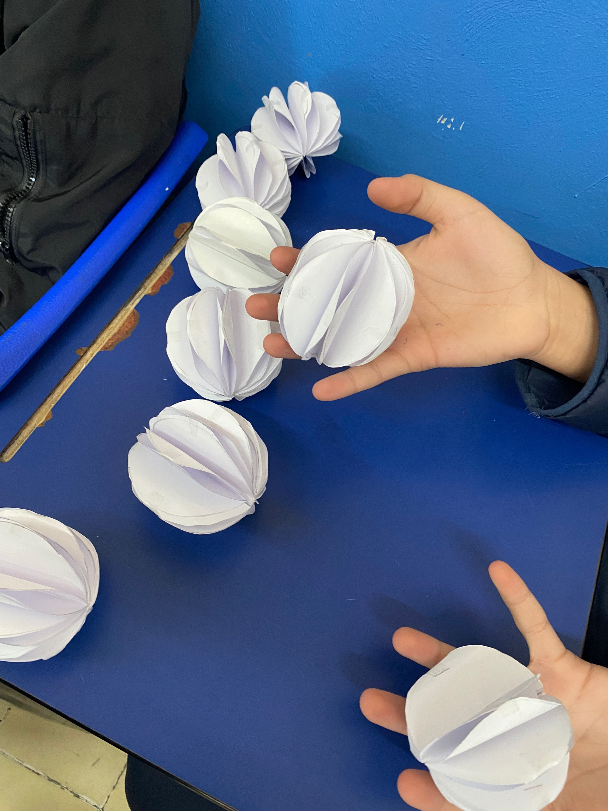
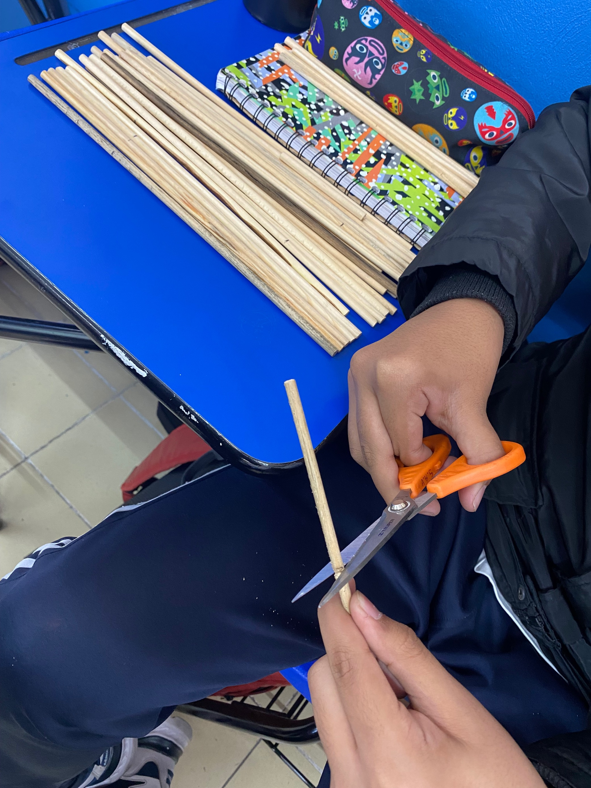
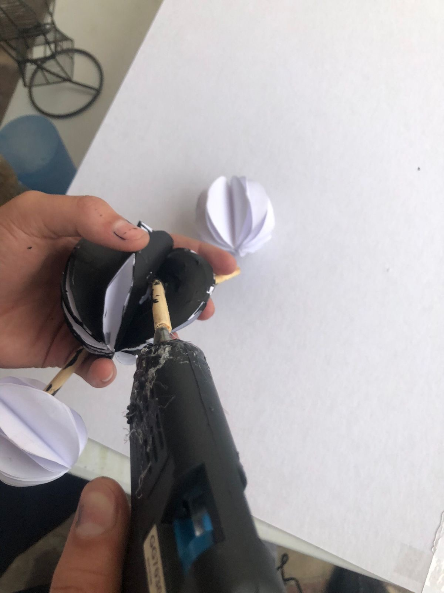
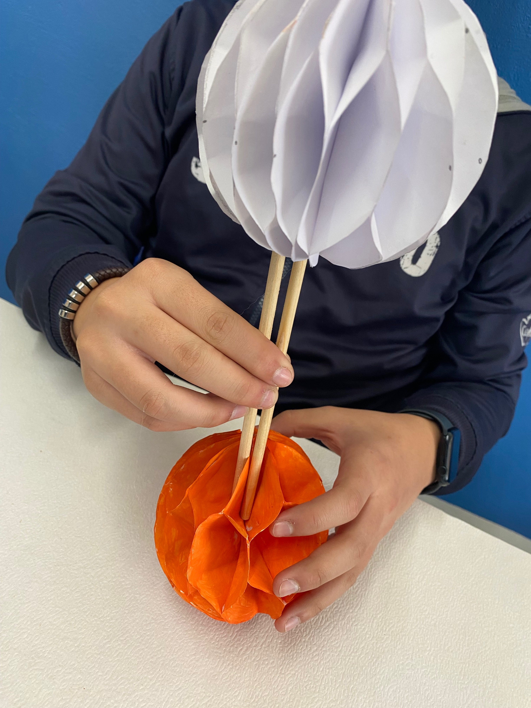
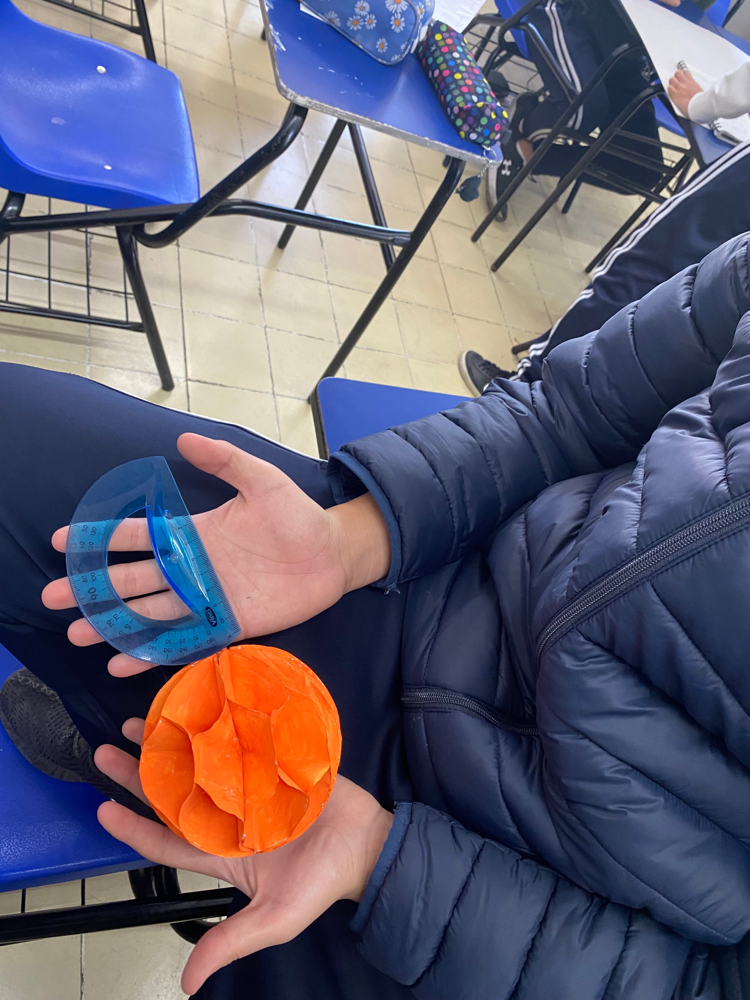

Para hacer la maqueta del octano primero hicimos esferas de papel , las pintamos,recortamos palos de madera para hacer los enlaces y las unimos con las demas moleculas.
Para hacer la maqueta del azufre hicimos esferas de papel mas grandes, las unimos con sus enlaces(palos de madera), pintamos la molecula del azufre de diferente color.
Derechos reservados:
Alfonso,Sofia,Elias,Isaac G,G,Carlo
Proyecto 2023©
https://www.caracteristicass.de/azufre/
http://www.objetos.unam.mx/quimica/hidrocarburos/index.html